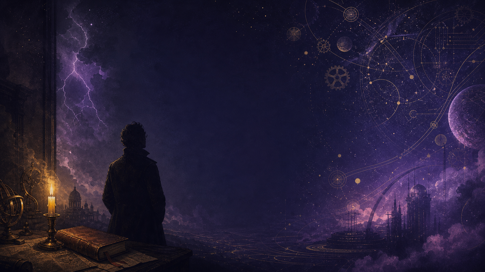
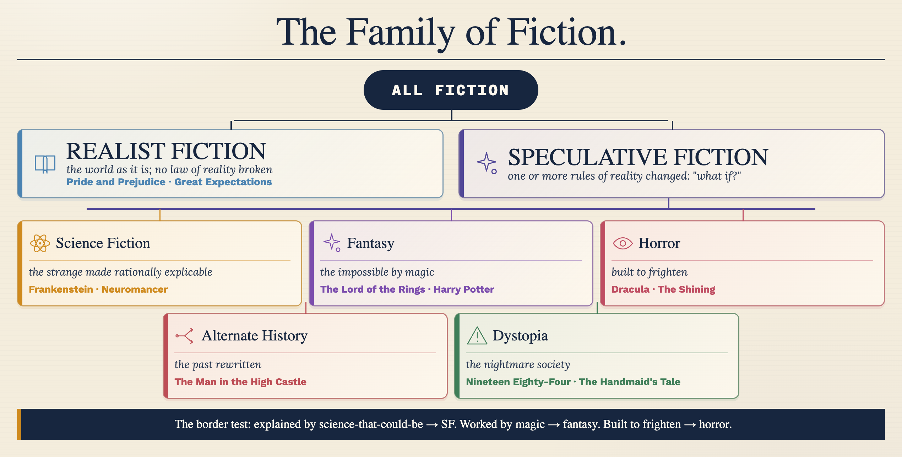
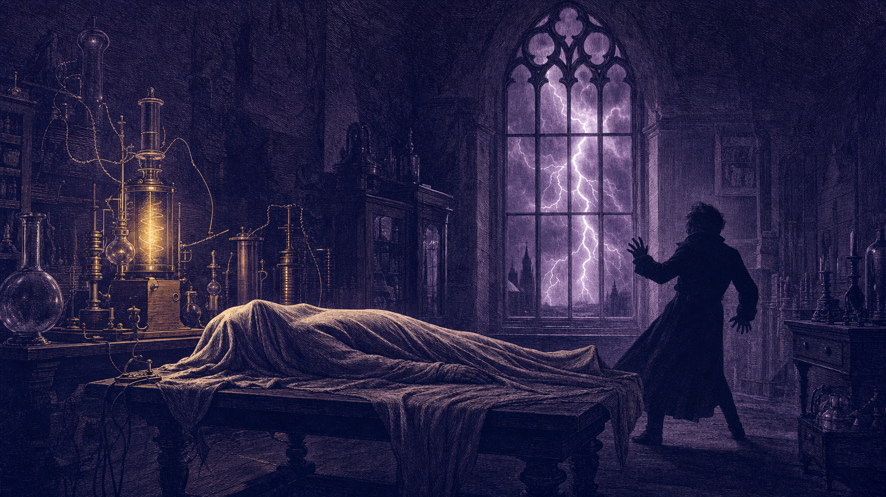
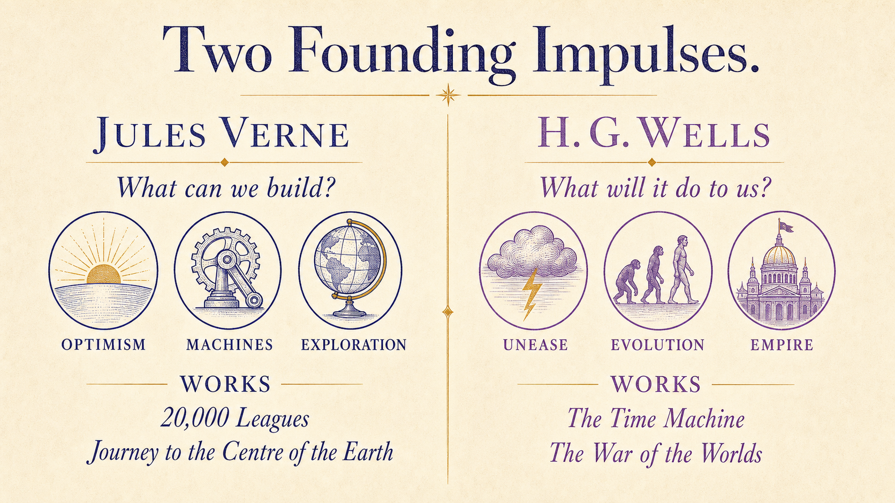
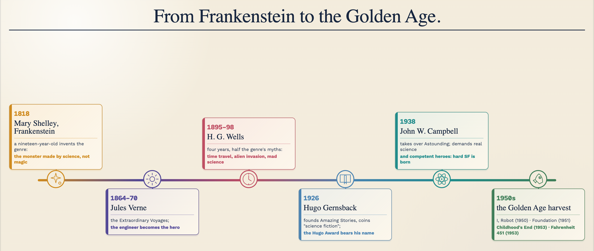
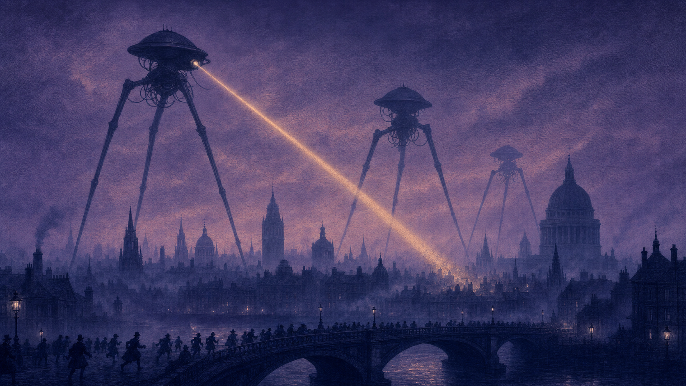
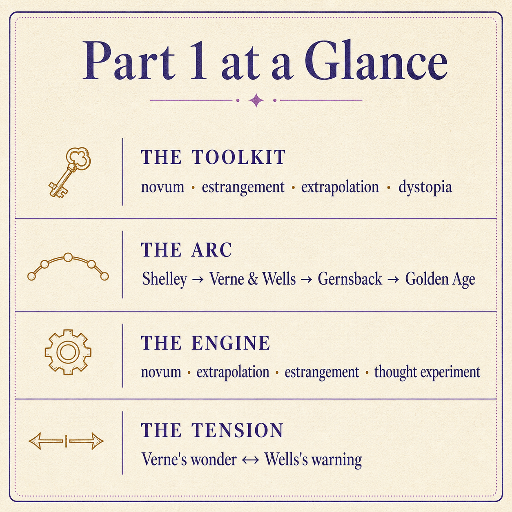

Origins & How It Works · C1/C2 · Speaking, Analysis & Discussion
Science fiction is often dismissed as escapism — rockets, robots, ray-guns. Yet at its most serious it may be the most philosophical writing we have: a laboratory of the imagination in which a culture tests its hopes and fears about knowledge, power and what it means to be human. Over these two lessons we'll trace how it grew from one teenager's ghost story into a global literature — and, just as importantly, examine how it is written.
Before we begin — think aloud, no notes. There are no wrong answers yet:
When you hear “science fiction,” what three images come into your head first? Where do you think those images came from?
Have you ever read or watched something set in the future that felt like it was really about now? Tell me about it — or about the last piece of science fiction you enjoyed, and why.
Gut instinct, before we study anything: is science fiction mainly entertainment, or can it be serious literature? By the end of today you'll answer this again with evidence.
To discuss science fiction at an advanced level you need metalanguage — precise critical terms for what a text is doing. First, the biggest map of all: where science fiction sits inside fiction itself.
Realist (mimetic) fiction shows the world as it is, or could really be — no law of reality is broken. Speculative fiction changes one or more rules of reality and explores the result. Its neighbourhoods differ in how they break the rules:

Apply the test. Star Wars has spaceships — but “the Force” is never scientifically explained, and its knights fight with swords and destiny. Science fiction, or fantasy in disguise? And The Handmaid's Tale — a future with no invented technology at all, only politics? Defend a placement for each.
Tap each card for the short version — the full teaching, with examples, is in the boxes beneath.
The critic Darko Suvin coined novum (Latin for “new thing”) for the single invented element a science-fiction story is built on: a time machine, a thinking robot, a Martian invasion, a drug that stops ageing.
Two rules make it work. First, there is usually one big novum — change everything and the reader has nothing to hold on to. Second, the story treats it as real and explicable, so the reader is invited to reason about it — What would it cost? Who would control it? — not simply to marvel at it.
Try it as a test: a story about a dragon has no novum (it's magic); a story about a genetically engineered dragon, built in a lab and sold as a weapon — that has a novum, and instantly becomes a story about corporations and war.
Also Suvin's term, and the genre's deepest trick. We stop seeing the world we live in — our habits, hierarchies and machines become invisible through familiarity. Science fiction makes them strange again, so we look at them properly for the first time.
How? By displacement. Show a reader an alien society where the old are discarded once they stop working, and the reader suddenly sees how their own society treats the old. The “cognitive” half matters too: unlike a dream or a fairy tale, the strangeness stays rationally explicable — so the reader thinks, rather than just wonders.
Take a trend that is genuinely happening — surveillance cameras multiplying, sea levels rising, attention shrinking — and push it, logically, twenty or two hundred years forward. The result is a controlled experiment on the present: the future setting is really a magnifying glass.
This is why good science fiction so often looks “prophetic” later. It didn't see the future; it saw the present clearly and followed the arrow. The classic opening move of the genre is literally the phrase: “If this goes on…”
Utopia (from Greek, a pun meaning both “good place” and “no place”) is an imagined ideal society — the word comes from Thomas More's 1516 book of that name. Dystopia is its shadow: an imagined society where something we fear — total surveillance, engineered inequality, religious tyranny — has won completely.
The crucial point: a dystopia is almost never really about the future. It is a warning about the present, stretched large enough that no one can miss it. That's why the scariest dystopias contain nothing impossible — only current tendencies taken seriously.
Take any science-fiction film or series you know — even vaguely. Tell me: what is its novum? What real trend does it extrapolate? And what does it make strange about our own world? (If nothing comes to mind, use The Matrix: machines farm sleeping humans inside a simulation — start there.)
Science fiction has no official birthday, but most critics give it one anyway: 1818. Here is the story of that beginning, and of the two rivals who then turned it into a genre.
The night it began: In the wet summer of 1816, a group of young writers were trapped indoors by storms at a villa on Lake Geneva. To pass the time, the poet Lord Byron proposed a contest: each of us writes a ghost story. The eighteen-year-old Mary Shelley — daughter of the feminist philosopher Mary Wollstonecraft, runaway partner of the poet Percy Shelley — produced the only one anyone remembers.
What happens in the novel: Victor Frankenstein, a brilliant young science student, discovers how to give life to dead matter. He assembles a creature from human remains and animates it — then, horrified by what he has made, abandons it. The nameless creature teaches itself language, seeks love, and is rejected by everyone who sees its face. Twisted by loneliness, it turns on its maker, destroying everyone Victor loves. Creator and creation pursue each other to the Arctic ice, where Victor dies and the creature vanishes into the darkness, promising to end itself.
Why it counts as the first: the critic Brian Aldiss's influential argument is that the monster is created not by magic or a curse but by science — electricity and anatomy, the cutting-edge research of Shelley's own day, extrapolated one step further. The horror is rational. And the subtitle, The Modern Prometheus, names the theme the genre has never let go of: Prometheus stole fire from the gods and was punished forever — knowledge taken without accepting responsibility for it.
Notice, too: the “monster” is the most sympathetic character in the book — an abandoned child. The real monster may be the maker who wouldn't take responsibility. The first science-fiction novel is already asking the genre's permanent question.

So the founding text of science fiction is a warning, written by a teenager, about a scientist who creates life and refuses responsibility for it. Knowing that — what would you say the genre was invented for? And who in today's world is playing Victor Frankenstein?
Later in the century, two giants turned Shelley's one-off into a form — the “scientific romance.” They could hardly have been more different, and their quarrel still defines science fiction.
Who he was: A stockbroker's clerk who escaped into geography and engineering journals, and turned meticulous research into best-selling adventure. His “Extraordinary Voyages” made him one of the most translated authors in history.
Twenty Thousand Leagues Under the Sea (1870): A French professor joins a hunt for a “sea monster” that is sinking ships — and discovers it is no animal but the Nautilus, a magnificent electric submarine commanded by the brilliant, bitter Captain Nemo, an exile waging a private war on the empires that destroyed his family. Held aboard as half-guests, half-prisoners, the narrator and his companions see wonders no human has seen — underwater forests, the ruins of Atlantis, battle with a giant squid — before escaping as the Nautilus is dragged into a whirlpool. Verne imagined a fully practical submarine decades before real ones ruled the seas.
Journey to the Centre of the Earth (1864): A German professor, his nephew and their guide descend through an Icelandic volcano and find beneath the crust a vast inner world — a subterranean sea, forests of giant mushrooms, living dinosaurs — before being blasted back to the surface on a raft of lava.
His question: “What can we build, and where can it take us?” Machines, in Verne, are marvellous. The mood is optimism, competence and wonder — the romance of engineering.
Who he was: A draper's apprentice from a poor family who clawed his way to a science scholarship and studied evolution under Darwin's great defender T. H. Huxley. He knew both biology and poverty — and both are everywhere in his books. In four astonishing years he invented half the genre's core myths.
The Time Machine (1895): An inventor rides his machine to the year 802,701 and finds humanity split into two species: the Eloi, beautiful, childlike creatures who play in the sunshine, and the Morlocks, pale ape-like machinists who live underground — and who, he slowly realises, farm the Eloi as food. It is Victorian England's class system followed to its evolutionary conclusion: the leisured rich and the industrial poor, grown into separate species, one literally consuming the other. He travels on to the end of the world — a dying beach under a swollen red sun — and returns to tell the tale to men who refuse to believe it.
The War of the Worlds (1898): Martians land in the quiet countryside outside London and, in towering three-legged war machines armed with a heat-ray, methodically demolish the mightiest empire on Earth. Nothing human stops them; they are finally killed by Earth's bacteria, to which they have no immunity. Wells wrote it as a deliberate reversal: Britain, which had colonised much of the planet, experiences being colonised by a power as far above it as it stood above the peoples it conquered.
His question: “What will it do to us?” In Wells, science is a lens on class, empire and human smallness — and the mood is warning.

You've now read what each man actually wrote. Verne asked “what can we build?” and delighted in the answer. Wells asked “what will it do to us?” and often shuddered. Which of the two feels like the truer ancestor of the science fiction you've seen and read? Argue it aloud — then compare your view with a critic's.
Between the wars, science fiction stopped being the occasional novel and became an industry — with its own magazines, its own name, and then its own giants.
The pulps were cheap magazines printed on rough wood-pulp paper — garish covers, sensational stories, sold for pennies at every news-stand in America. In 1926 a Luxembourg-born inventor and publisher, Hugo Gernsback, launched Amazing Stories, the first magazine devoted entirely to this kind of fiction. He needed a name for it, tried the unpronounceable “scientifiction,” and settled on “science fiction.” The label stuck; the genre's most famous prize, the Hugo Award, is named after him.
The pulps mattered less for their quality — much of it was terrible — than for what they created: a home. For the first time, writers and readers of science fiction could find each other, argue in the letters pages, and take the form seriously.
In 1937–38 a demanding young editor, John W. Campbell, took over the magazine Astounding and imposed two rules on his writers: the science must be plausible (no magic rays, no nonsense), and the characters must be competent, thinking adults solving problems, not screaming victims. Out of that discipline came the style called “hard SF” — science fiction that plays fair with real science — and the careers of nearly every major writer of the era. The Golden Age (roughly 1938–1950) is the period when the genre's classic furniture — robots, galactic empires, first contact — was built, mostly in Campbell's pages.
Its blind spot, worth naming now: the Golden Age imagined the future as an engineering problem solved by confident men — and its futures were strikingly white, male and American. Part 2 is the story of everyone who noticed.

Campbell's formula — plausible science, competent heroes, every problem solvable — made the genre popular. But think about who is missing from a future imagined that way, and what kinds of story it simply cannot tell. Make the case against the Golden Age — then say one thing it got right.
Who he was: Brought from Russia to Brooklyn as a toddler, he grew up serving in his parents' sweet shop, devouring the pulps on its racks, and became a biochemistry professor who wrote or edited over four hundred books. The genre's great rationalist.
I, Robot (1950): Linked stories built on his famous Three Laws of Robotics, hard-wired into every robot brain:
Each story is a logic puzzle in which the Laws collide — a robot caught between two orders circles helplessly; a mind-reading robot lies to everyone, because telling a painful truth would “harm” them. The point: even perfect rules produce imperfect outcomes. Every modern debate about “AI safety rules” is standing on this book.
Foundation (1951): The mathematician Hari Seldon invents psychohistory — a science that can predict the behaviour of vast populations statistically, though never of one person. His equations show the Galactic Empire will fall, followed by thirty thousand years of barbarism — unless a “Foundation” of scientists is planted at the galaxy's edge to shorten the darkness to a single millennium. The series follows the plan across centuries, through crisis after crisis.
Why he matters: He treated the future as something you could reason about — and gave the world the very idea of rules for intelligent machines.
Who he was: A US Navy officer invalided out by tuberculosis, an engineer by training, and for decades the most influential — and most provocative — writer in the field.
Stranger in a Strange Land (1961): Valentine Michael Smith, a human orphan raised from birth by Martians, is brought “home” to an Earth he has never seen. Through his Martian-trained eyes, every human habit — money, jealousy, religion, laughing at pain — looks bizarre and has to be explained from zero. He founds a church teaching what his upbringing taught him, and is martyred for it. The novel gave English a real word: “grok” — to understand something so completely that it becomes part of you. It became a bible of the 1960s counterculture.
Why he matters: He perfected the trick of using an outsider's gaze to make us the aliens — cognitive estrangement as a whole novel — and he never stopped provoking: soldier-citizenship in Starship Troopers, lunar revolution in The Moon Is a Harsh Mistress.
Who he was: An English farm boy turned radar officer who, in 1945, published the paper proposing communications satellites in geostationary orbit — the actual system the modern world runs on. The orbit is named after him. Of all the giants, he had the most genuine cosmic vision.
Childhood's End (1953): Vast ships appear over every city on Earth. The alien Overlords end war, cruelty and want almost overnight — a golden age, at the price of human ambition. For decades they refuse to show themselves; when they finally do, they have the horns and wings of our oldest image of the devil — not because they harmed us, but because our species somehow remembered them from its future. Their true role: midwives. The last generation of human children fuses into a single transcendent cosmic mind and leaves the dead Earth behind — humanity's glorious, annihilating graduation.
2001: A Space Odyssey (1968, with Stanley Kubrick): From a black monolith teaching apes to use tools, to the calmly murderous shipboard computer HAL 9000, to an astronaut reborn as something more than human — the same theme at cinema scale: intelligence being led up a ladder it doesn't understand.
Why he matters: He supplied the genre's sense of awe — the feeling that the universe is grander and stranger than us, and that meeting it will transform us.
Who he was: A small-town Illinois boy who never learned to drive, wrote on library typewriters he rented by the half-hour, and brought poetry into a genre of engineers.
Fahrenheit 451 (1953): In a future America, firemen don't put out fires — they start them, burning books, which are banned. Guy Montag is a fireman, content until a strange, questioning girl named Clarisse asks him whether he is happy — and he realises he isn't. His wife spends her days with the “family,” interactive characters on wall-sized televisions; her overdose is treated as routine. Montag begins stealing books from the fires, is betrayed, forced to burn his own house, and flees the mechanical Hound to join a community of exiles who each memorise a book, waiting for the world to want them again — as war finally erases the city behind him. Crucially, the state didn't impose the burning: people stopped reading on their own, preferring speed, screens and easy happiness. The firemen came later. (The title is the temperature at which paper burns.)
The Martian Chronicles (1950): Linked, elegiac stories of Earth colonising Mars — and bringing every human failing along in the luggage.
Why he matters: He proved science fiction could be lyrical, sad and beautiful — and Fahrenheit 451's real prophecy (screens we choose over books) only grows sharper.
Four giants, four books you now know the shape of: Asimov's robot logic-puzzles, Heinlein's Martian-raised outsider, Clarke's devil-shaped midwives, Bradbury's book-burning firemen. Which one would you actually read first — and which premise do you find weakest? Defend both choices; taste needs reasons.
Who coined the term “science fiction,” and what two demands did Campbell make of his Golden Age writers?
A spaceship doesn't make a story science fiction; a set of techniques does. There are four, and you've already met them all in action — now we name them so you can use them on any text. Hold one science-fiction story you know in your head as you go, and test it against each.
One new element is introduced and treated as scientifically real, however fantastic. Because it is explicable, the reader is invited to reason about it — its costs, owners, victims — not simply to gasp at it.
Seen in action: Wells's time machine is a device with saddle and levers, not a spell — so the story becomes an argument about class and evolution. Asimov's robots obey three explicit laws — so every story becomes a proof, probing them for loopholes.
Say it: what's the novum in your story — and who controls it?
Take a real, current trend and push it to its logical extreme. The future becomes a controlled experiment on the present.
Seen in action: Bradbury watched televisions arrive in living rooms and people stop reading — and extrapolated to wall-sized “families” and firemen who burn books. Wells took Victorian class division and extrapolated it into two separate species, one eating the other.
Say it: what real trend, visible today, does your story push to the extreme?
By setting the story elsewhere or elsewhen, the text strips our own world of its invisibility — we judge ourselves as if from outside.
Seen in action: Heinlein's Martian-raised Smith finds money and jealousy incomprehensible — and suddenly so do we. Wells's Martians treat the British Empire exactly as the British Empire treated its colonies — and Victorian readers felt, for one uncomfortable book, what it was to be on the receiving end.
Say it: what does your story make strange about the world you actually live in?
Many science-fiction stories are one question dramatised to its limit: What if machines could think? What if we met something smarter than us? What if no one could die? Character and plot exist to stress-test the idea honestly — the story earns respect by not cheating.
Seen in action: Childhood's End asks: what if utopia arrived — and the price was everything that makes us us? I, Robot asks: can rules ever fully contain a mind?
Say it: state your story's central question in one sentence beginning “What if…?”
Now put your story through all four: its novum, its extrapolated trend, what it estranges, and its “what if.” Two minutes, no notes — this is exactly how an examiner wants a text opened up. Jot a skeleton first if it helps:
Advanced analysis is about how language creates meaning. Our specimen is the most famous opening idea in the genre — from a novel you now know the shape of.

Answer aloud first. Then compare.
If The War of the Worlds were written today, the “intellects vast and cool and unsympathetic” studying us wouldn't need to come from Mars. Who or what would they be — and what would the story be warning us about? Argue it in two or three sentences, using the idea of the reversed gaze.
Everything you need for these is now in your head: Shelley's warning, Verne's wonder, Wells's reversed gaze, Campbell's confident formula, Bradbury's self-chosen screens. Pick two debates. Take a position, support it with the writers and terms you've learned, and concede one point to the other side — the concession is what turns a good argument into an excellent one.
1. Aldiss called Frankenstein the first science fiction because its monster is made by science, not magic. But you could argue the genre truly begins with Gernsback in 1926 — when it got a name, a home and an audience. Which counts as a “birth”: the first great work, or the moment a community forms?
2. Verne's wonder or Wells's warning — which does the world need more of right now? (Think about how we currently talk about AI, space travel and climate.)
3. Bradbury's firemen only burn what people had already stopped reading. Is Fahrenheit 451's real target censorship — or us? Use your own screen habits as evidence for or against him.
4. The Golden Age sold a future of competent heroes and solvable problems. Comforting lie, or necessary optimism? What does a culture lose when its stories stop believing problems can be solved?
Draft one sentence comparing Verne and Wells that could open a comparative essay. It must make an arguable claim — something a reasonable person could push back on — not just state a difference. Use a frame, then say yours aloud and defend it.
No notes — let's see what stuck. Say each answer aloud in full sentences.
1. Tell the story of how Frankenstein came to be written, and give Aldiss's argument for why it counts as the first science fiction.
2. Define, with an example each: the novum, extrapolation, cognitive estrangement.
3. One sentence each: what happens in The Time Machine, I, Robot, and Fahrenheit 451?
4. Who were Gernsback and Campbell, and what did each give the genre?
5. Sum up the Verne–Wells contrast — and say which side of it you stand on.

At the start you gave a gut answer to “is science fiction serious literature?” Answer it again now — has your answer changed, and which single book or idea from today did the changing? Which will you actually go and read?